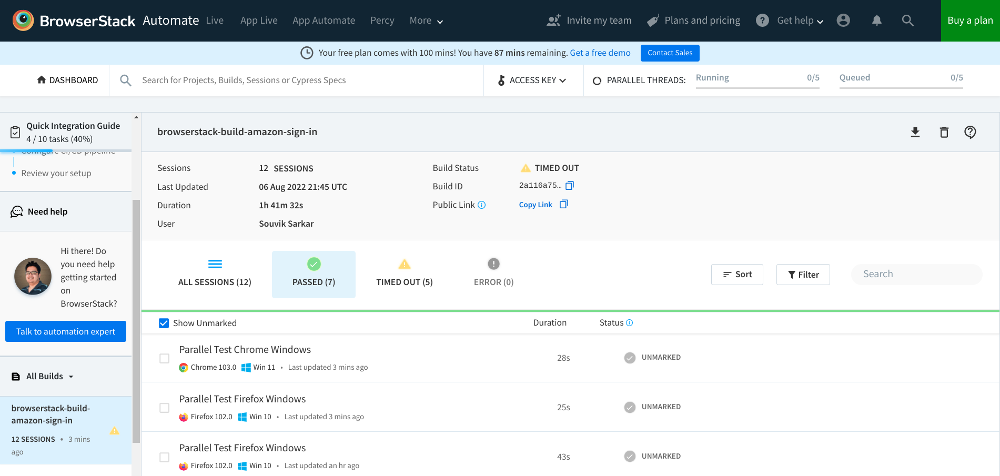
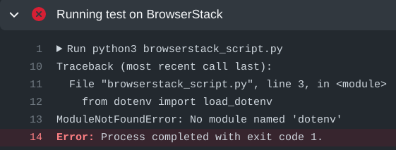

Context
Challenges in QA automation
Automated testing of modern websites and mobile applications poses the following primary challenges:
- The tests must run on numerous combinations of devices and browsers in parallel to speed up the process.
- The tests must be triggered for each new build of the application, or for each new code submission by developers.
- Logging and observability of test runs must be transparent, and the test results accessible from a single platform.
BrowserStack’s offerings
BrowserStack solves these problems by offering the following:
- A large collection of devices and browser versions on which you can run your tests
- Support for almost all common programming languages and testing frameworks
- Easy integration of large test suites with the BrowserStack platform
- Comprehensive and detailed reports and logs for each test session in a single dashboard
- Support for automated testing pipelines for all common CI/CD technologies
- Intuitive management of users, permissions, and large-scale testing infrastructure
- Detailed documentation and support for everything you can do with BrowserStack
- Transparent and reasonable pricing for individual users, small teams, and enterprises
Objectives
This tutorial helps you familiarize yourself with BrowserStack’s capabilities, so that you can easily adopt BrowserStack for testing websites and mobile applications. In particular, you will learn about the following:
- Creating and running a test automation script using Python and Selenium on your local machine. The script automatically tests signing in to Amazon’s website.
- Adapting the script to use BrowserStack’s capabilities, and running tests remotely on BrowserStack.
- Automating the running of tests using GitHub Actions for each modified version of the script.
Audience
The ideal audience for this tutorial is professionals with interest or experience in automated testing of websites and mobile applications.
The code samples used in this tutorial are for demonstration only; DO NOT use them in production scenarios.
Prerequisites
Before starting with test automation, ensure the following:
- Git is installed on your local machine. You can download it from the git-scm website.
- You are familiar with Python and Selenium for automated tests.
- You have an active GitHub account. If not, sign up for an account.
- You have a basic idea about Continuous Integration (CI) pipelines.
Testing on a local machine
Before running a script on BrowserStack’s grid, create and test the simpler version of the script on your local machine.
All command examples and code snippets included in this tutorial have been tested on a local machine running the Fedora 35 operating system. Whenever necessary, modify the commands and code snippets according to your machine’s operating system and package manager.
Installing dependencies on the local machine
Before creating a test script, ensure that your local machine has all necessary dependencies.
Write the following script in a file
set_up.shto create a virtual environment and install dependencies:# Set up and activate a Python virtual environment. cd browserstack-assignment/ python -m venv browserstack source browserstack/bin/activate # Install selenium v 4.1.0 python -m pip install selenium==4.1.0 # Install python-dotenv package for handling environment variables from the test script python -m pip install python-dotenvRun the
set_up.shscript file:bash set_up.shCheck the version of Google Chrome on your machine by running
chrome://version/in the browser’s address bar. Note the version, such asGoogle Chrome: 104.0.5112.79 (Official Build) (64-bit).Check the version of any
chromedriverpackage installed on your system:chromedriver --version # ChromeDriver 96.0.4664.45 (76e4c1bb2ab4671b8beba3444e61c0f17584b2fc-refs/branch-heads/4664@{#947})If the version of the
chromedriverpackage is older than the Google Chrome version, remove thechromedriverpackage:which chromedriver # ~/bin/chromedriver rm ~/bin/chromedriverInstall the
chromedriverpackage that matches the Google Chrome version.- Download the correct version for your system from the Chromium website.
- Unzip the downloaded file and navigate to the resulting directory.
- Copy the
chromedriverbinary to any location supported by your$PATHvariable.
Locally running a test script
Create a
.envfile and save your Amazon sign-in credentials in the file:AMAZON_EMAIL="<email_registered_with_amazon>" AMAZON_PASSWORD="<password_for_amazon_account>"NoteYou can safely use the
.envfile for storing Amazon sign-in credentials while experimenting and developing the scripts. The.gitignorefile has an entry for the.envfile to prevent any accidental check-ins.Create a file
local_script.py:import os, time from selenium.webdriver import Chrome from selenium.webdriver.common.by import By from dotenv import load_dotenv # Helper function to mimic slow typing by a human def slow_typing(element, text): for character in text: element.send_keys(character) time.sleep(0.3) AMZ_URL = "https://amazon.in/" load_dotenv() AMAZON_EMAIL = os.environ.get("AMAZON_EMAIL") AMAZON_PASSWORD = os.environ.get("AMAZON_PASSWORD") browser = Chrome() browser.get(AMZ_URL) time.sleep(2) sign_in_button = browser.find_element(By.ID, "nav-link-accountList") sign_in_button.click() time.sleep(2) username_textbox = browser.find_element(By.ID, "ap_email") slow_typing(username_textbox, AMAZON_EMAIL) time.sleep(2) continue_button = browser.find_element(By.ID, "continue") continue_button.submit() time.sleep(2) password_textbox = browser.find_element(By.ID, "ap_password") slow_typing(password_textbox, AMAZON_PASSWORD) time.sleep(2) sign_in_button = browser.find_element(By.ID, "auth-signin-button-announce") sign_in_button.submit() time.sleep(5) browser.close()Run the file
local_script.py:python local_script.py
Integrating the script with BrowserStack
After successfully testing the script on your local machine, modify and integrate the script with BrowserStack.
Getting BrowserStack secrets
Sign up for a trial account of BrowserStack.
Navigate to your BrowserStack dashboard.
From the ACCESS KEY dropdown menu, note the values of the User Name and Access Key fields.
In the
.envfile, add the BrowserStack secrets below the Amazon account credentials and save it:BROWSERSTACK_USERNAME="<your_browserstack_username>" BROWSERSTACK_ACCESS_KEY="<your_browserstack_access_key>"The final content of the
.envfile is similar to the following:$ cat .env AMAZON_EMAIL="<email_registered_with_amazon>" AMAZON_PASSWORD="<password_for_amazon_account>" BROWSERSTACK_USERNAME="<your_browserstack_username>" BROWSERSTACK_ACCESS_KEY="<your_browserstack_access_key>"
Modifying the test script
Modify the script to use BrowserStack’s capabilities of running parallel tests on numerous device and browser combinations. The entire modified script, named browserstack_script.py, is given below:
import os, time
from dotenv import load_dotenv
from selenium import webdriver
from selenium.webdriver.chrome.options import Options as ChromeOptions
from selenium.webdriver.firefox.options import Options as FirefoxOptions
from selenium.webdriver.common.by import By
from threading import Thread
load_dotenv()
BUILD_NAME = "browserstack-build-amazon-sign-in"
capabilities = [
{
"browserName": "chrome",
"browserVersion": "103.0",
"os": "Windows",
"osVersion": "11",
"sessionName": "Parallel Test Chrome Windows",
"buildName": BUILD_NAME
},
{
"browserName": "firefox",
"browserVersion": "102.0",
"os": "Windows",
"osVersion": "10",
"sessionName": "Parallel Test Firefox Windows",
"buildName": BUILD_NAME
},
]
def get_browser_option(browser):
switcher = {
"chrome": ChromeOptions(),
"firefox": FirefoxOptions(),
}
return switcher.get(browser, ChromeOptions())
def run_session(cap, AMZ_URL="https://amazon.in/"):
cap["userName"] = os.environ.get("BROWSERSTACK_USERNAME")
cap["accessKey"] = os.environ.get("BROWSERSTACK_ACCESS_KEY")
options = get_browser_option(cap["browserName"].lower())
options.set_capability("browserName", cap["browserName"].lower())
options.set_capability("bstack:options", cap)
driver = webdriver.Remote(
command_executor="https://hub.browserstack.com/wd/hub", options=options
)
driver.get(AMZ_URL)
sign_in_button = driver.find_element(By.ID, "nav-link-accountList")
sign_in_button.click()
time.sleep(2)
AMAZON_EMAIL = os.environ.get("AMAZON_EMAIL")
AMAZON_PASSWORD = os.environ.get("AMAZON_PASSWORD")
username_textbox = driver.find_element(By.ID, "ap_email")
username_textbox.send_keys(AMAZON_EMAIL)
time.sleep(2)
continue_button = driver.find_element(By.ID, "continue")
continue_button.submit()
time.sleep(2)
password_textbox = driver.find_element(By.ID, "ap_password")
password_textbox.send_keys(AMAZON_PASSWORD)
time.sleep(2)
sign_in_button = driver.find_element(By.ID, "auth-signin-button-announce")
sign_in_button.submit()
time.sleep(2)
print("Sign in test complete.")
driver.quit()
for cap in capabilities:
Thread(target=run_session, args=(cap,)).start()Running the modified script on BrowserStack
python browserstack_script.pyObserving test results in the BrowserStack dashboard
You can monitor tests, inspect logs, and access other details of test sessions using the BrowserStack dashboard.
- In your BrowserStack dashboard, select the build from the All Builds drop-down list on the left navigation pane.
- Check the status of the sessions for the selected build.

Automatically running the modified script using GitHub Actions
Using GitHub Actions, set up a CI pipeline such that each push or pull request to the project’s GitHub repository triggers the tests to run on BrowserStack.
Create a
.gitignorefile to prevent the environment secrets from getting pushed to a remote repository on GitHub:echo ".env" >> .gitignoreCreate a GitHub repository named
browserstack_automationfor the project and push the local project to the remote repository:git init git add --all git commit -m "first commit" git branch -M main git remote add origin git@github.com:<username>/browserstack_automation.git git push -u origin mainIn your repository on GitHub, navigate to Settings → Secrets (left navigation pane) → Actions → New repository secret.
Add your BrowserStack secrets that are available in the
.envfile of your project directory:- Name:
BROWSERSTACK_USERNAME, Value:<your_browserstack_username> - Name:
BROWSERSTACK_ACCESS_KEY, Value:<your_browserstack_access_key>
- Name:
In the repository root, create a
.github/workflows/browserstack_actions.ymlfile that defines the GitHub Actions workflow:name: 'BrowserStack GH Actions Test' on: [push, pull_request] jobs: ubuntu-job: name: 'BrowserStack Test on Ubuntu' runs-on: ubuntu-latest steps: - name: 'BrowserStack Env Setup' uses: browserstack/github-actions/setup-env@master with: username: ${{ secrets.BROWSERSTACK_USERNAME }} access-key: ${{ secrets.BROWSERSTACK_ACCESS_KEY }} - name: 'BrowserStack Local Tunnel Setup' uses: browserstack/github-actions/setup-local@master with: local-testing: start local-identifier: random - name: 'Checkout the repository' uses: actions/checkout@v2 - name: 'Setting up the runner' run: bash set_up.sh - name: 'Running test on BrowserStack' run: python3 browserstack_script.py - name: 'BrowserStackLocal Stop' uses: browserstack/github-actions/setup-local@master with: local-testing: stopTo test the GitHub Actions workflow, make a minor modification in the project and push the changes to GitHub:
git add <modified_file> git commit -m "Testing GitHub Actions" git pushIn your GitHub repository, navigate to Actions → <your_GitHub_Actions_job> and observe the job logs.
NoteOne of the common reasons of failure for the
browserstack_actions.ymlworkflow is the following error:ModuleNotFoundError: No module named 'dotenv'.
Dotenv error in GitHub Actions The failure happens due to a known bug. The bug is not easily reproducible, and currently has no known solutions that are universally applicable.
In your BrowserStack dashboard, select the GitHub Actions build from the All Builds drop-down list on the left navigation pane, and observe the test status.
A modified and hopefully better version of this project is available on GitHub.